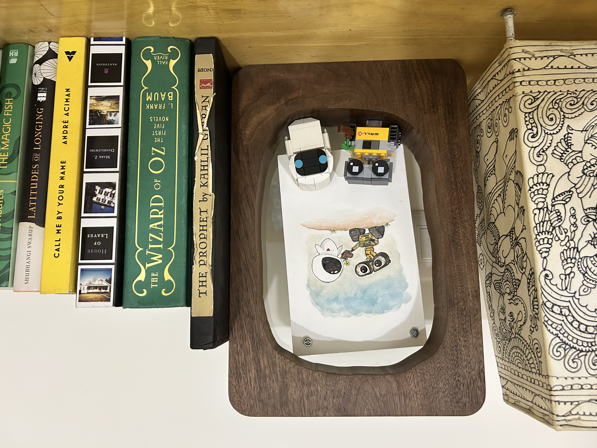

The walnut wood for this project came from Haverford College's Arboretum, making the frame deeply personal and tied to a meaningful place. I sketched a design inspired by the natural shape of a tree trunk, with an organic, flowing opening to mirror a hole in a tree. The blend of wood and metal symbolized the connection between earth and space—a recurring theme in the film.
I used a CNC mill to cut the walnut slab to size and carve an organic hole in the center, preserving the natural feel of the design. I used a CAD-designed, 3D-printed LEGO brick to anchor the figurines to the frame. For mounting the glass, I opted for magnets instead of gluing it directly to the wood, as wood is a "living" material that expands and contracts with environmental changes, providing flexibility while maintaining a clean look.
To secure the artwork, I used magnets with sawed-off screw heads glued to the top, combining functionality with a minimalistic, industrial aesthetic. Over several days, I meticulously sanded and finished the walnut to enhance its natural dark grain and achieve a smooth, polished surface, creating a striking contrast with the metallic elements.
